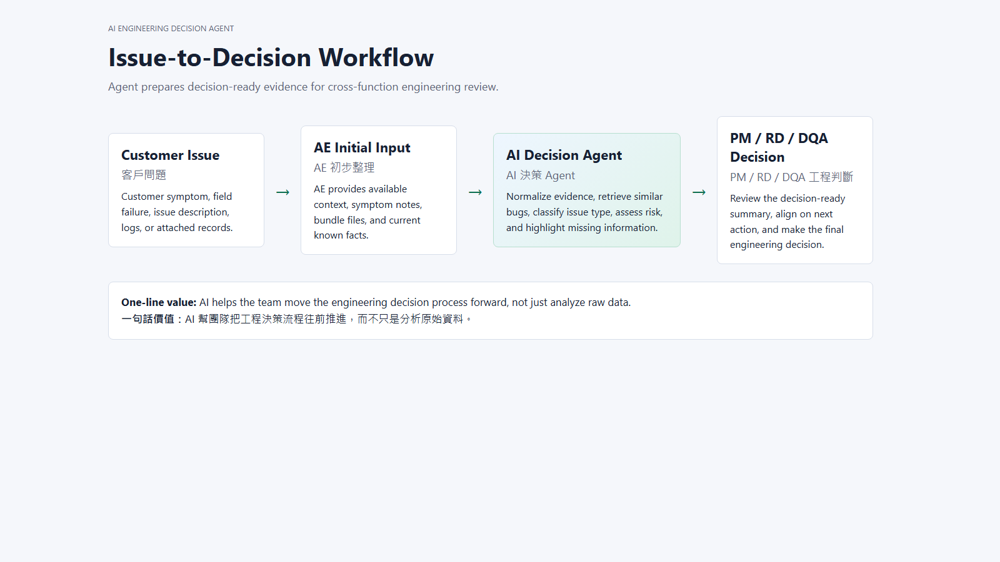
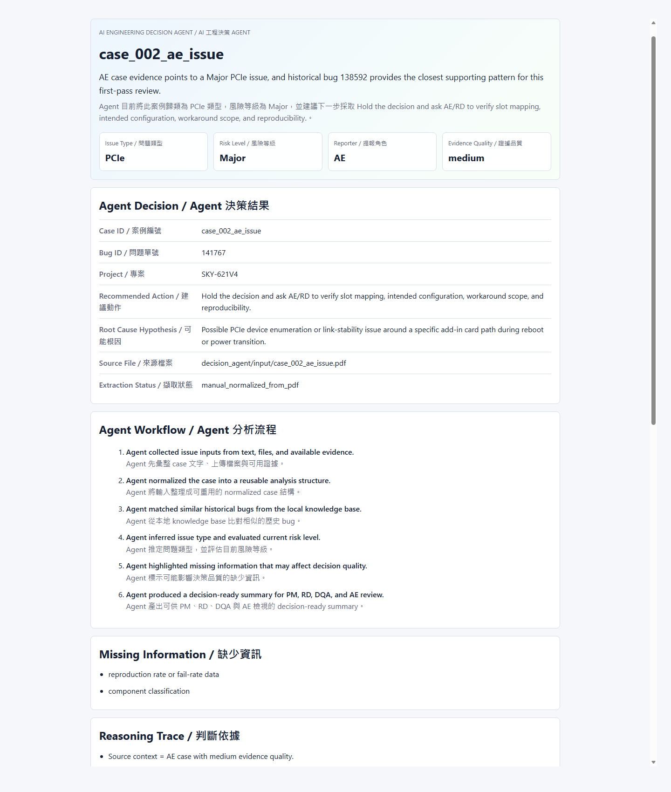
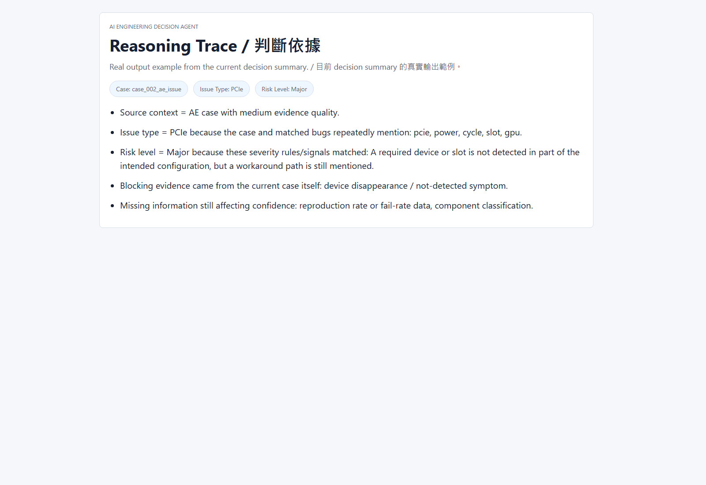

AI Engineering Decision Agent
Issue-to-Decision Agent for AE / PM / RD / DQA
A demo-ready engineering decision support agent that turns scattered issue evidence into a decision-ready summary.
- Integrates issue text, logs, comments, PDF, HTML, and image evidence
- Retrieves historical bug patterns from a local knowledge base
- Outputs issue type, risk level, missing information, and recommended action
- Supports explainable decision review across AE, PM, RD, and DQA

Workflow overview / 流程總覽

HTML report snapshot / HTML 報告畫面

Reasoning trace snapshot / 判斷依據畫面